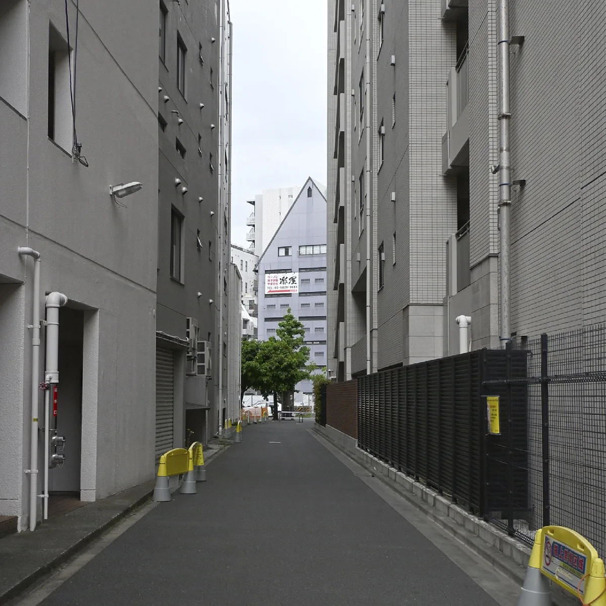
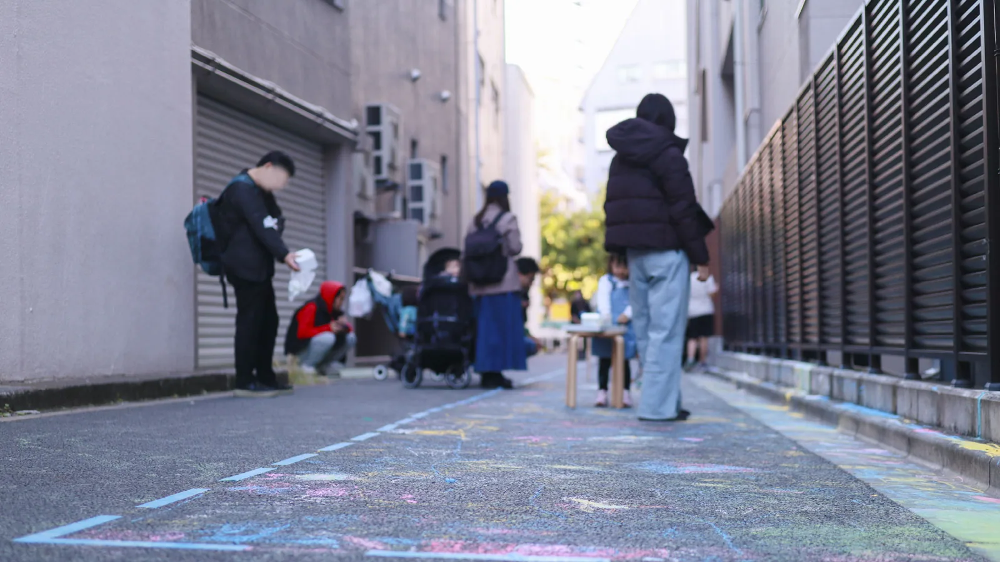

すきまキッズラボは、千代田区が進める「ウォーカブルなまちづくり」の一環として、2025年にスタートしたプロジェクトです。
千代田区では、道路などの公共空間に人と人とのつながりを生み出し、誰もが心地よく過ごせるまちを目指しています。
その考えに共感したポンドデザイン研究所と、東京都立大学インテリアデザインスタジオがタッグを組み、2025年から活動を始めました。
わたしたちが注目したのは、街のすきまにある道、暗渠（あんきょ）です。
暗渠とは、かつて川が流れていた場所を埋め立ててできた道のこと。街の中にありながら人目につきにくく、路上喫煙やポイ捨てなどの問題を抱えている場所もあります。

そんな街のすきまを、子どもたちの自由な発想や遊びの力を通じて、もっと楽しく魅力的な場所にできないだろうか？
そのアイデアがすきまキッズラボとして形になりました。
2025年には、暗渠を舞台に、遊びながら子どもたちの想像力や表現力を育むワークショップを開催。「パタパタおもちゃづくり」「スライドパズル」「立体パズル」「チョークお絵描き」といった、つくることや描くことを楽しみながら、自由に表現できるプログラムを実施しました。

たくさんの方にご参加いただき、普段は人通りの少ない道が、子どもたちの笑顔や遊びで彩られた、明るく楽しい場所に変わりました。
街のすきまに、まだ知られていない楽しさや可能性を見つけていくため、2026年も活動を続けています！